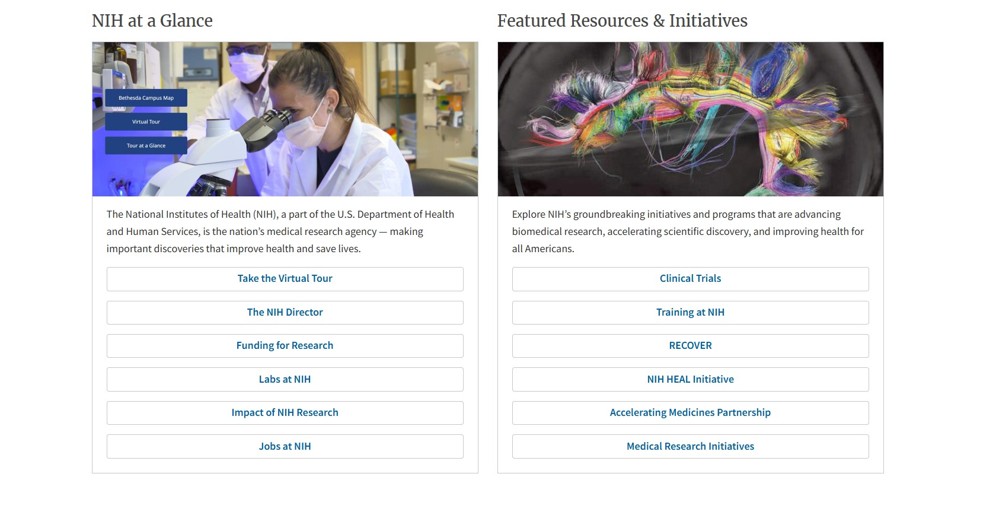
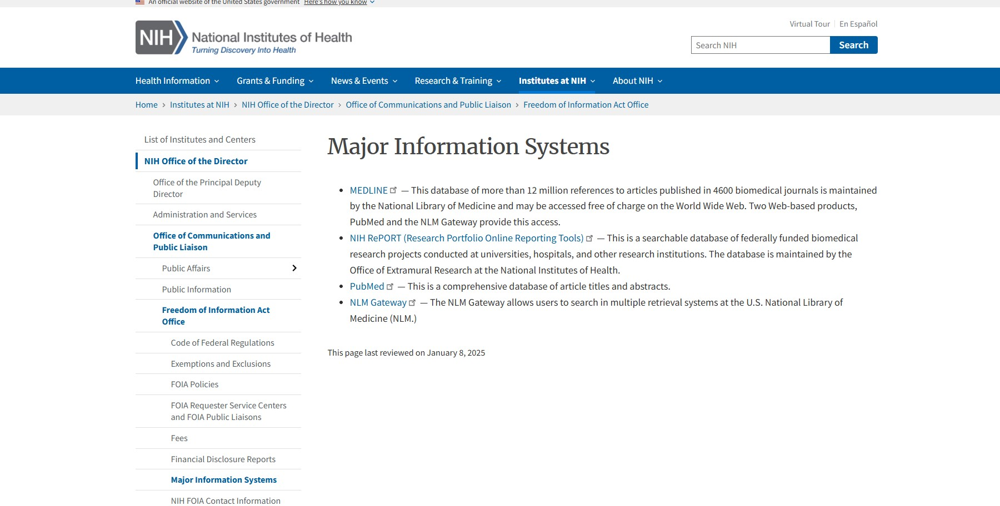
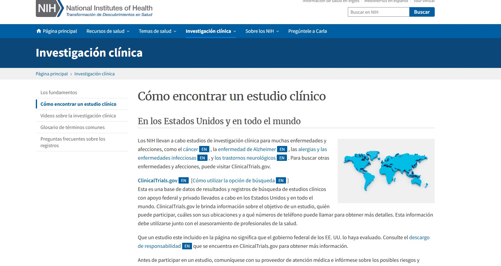

The NIH is the nation’s medical research agency, and works towards discoveries and findings related to health and leading the world in medicine and saving lives. The mission statement of the NIH is as follows, “NIH’s mission is to seek fundamental knowledge about the nature and behavior of living systems and the application of that knowledge to enhance health, lengthen life, and reduce illness and disability (NIH). Some of the main goals of the organization is to “ foster fundamental creative discoveries, innovative research strategies, and their applications as a basis for ultimately protecting and improving health; “to develop, maintain, and renew scientific human and physical resources that will ensure the Nation's capability to prevent disease;to expand the knowledge base in medical and associated sciences in order to enhance the Nation's economic well-being and ensure a continued high return on the public investment in research; and to exemplify and promote the highest level of scientific integrity, public accountability, and social responsibility in the conduct of science.”(NIH).
The NIH is the United State’s government's primary agency of health, along with being its main source of information regarding biomedical research and public health development. As an information system, the NIH is massive, and multifaceted. The NIH is affiliated with systems or repositories such as PubMed, MEDLINE, and NLM Gateway… (NIH). A part of the NIH’s mission in delivering technology and research is to also have a secure and reliable IT infrastructure, making this a function of the organization as well. The NIH is made up of 27 institutes and centers that each have their own specific research agenda. Ultimately, the NIH aims to improve research and the health of the nation.

Major Component of the System Incude:
Each of these information systems available through the NIH website are supported by the organization, and should be valued as highly credible and appropriate on the theme of the organization being evaluated. Security wise, the sites are secure as the website handle does end with .gov or .org, typically being more secure with higher security measures in place. Current access to these databases and research, as well as the NIH overall, is completely free. Making this system highly accessible and also reliable. The information available though is generally nuanced and difficult to understand unless an expert or professional in the field. So, while the information is available, understanding of it may be limited to just professionals or experts. Prior knowledge is expected, but does not change the access to the literal website. The general public or users not affiliated with healthcare can still browse through the website, and potentially still find relevant information, but more nuanced information may be a bit challenging to discover for the general user.

Upon evaluation of the NIH system, overall it is widely accessible, secure, and informative. The website offers a wide range of information that all pertain to the organization's main goals, mission and purpose. Ways to better the system though would require a deeper look into the site as a whole. The NIH is a vast network and website that holds a lot of information. Specifically, after evaluation of the system in my opinion, nothing stood out to me and made me think that clear disorganization or mishap were occuring. Since the NIH does have a lot of responsibilities, with it being a requirement to be useful to its nation and the people it serves, the website is valuable and well laid out. Since the NIH is responsible for being the main information center of health and biomedicine in the US, it is fair to say that the website is curated with the purpose of fulfilling that role. But, a few things that could make the website more, is perhaps implementing a more futuristic looking layout. While the NIH’s current look for the website is ideal, it could also be a bit more fun. For example, a moving image carousel for the home page is more eye-catching and interesting to a visitor. Straying away from the typical stock type images of science for example. An actual image of a research project of the science centers, or of examples of findings, scans, science being discussed on the website. The purpose would be to improve the credibility of the website through images, and also to bring to light that the science and research of the NIH is interesting and cool. The website can cater to more than just fulfilling a role to be a center of research, it can tap more into it being a public website and service as well.
Another input that could be of service is to use more AI bots for search purposes and easier navigation of the website. This website is vast and as previously mentioned, knowledge of some healthcare may be required to find what one is looking for, easier search capabilities is useful. Ultimately, being a public government website, it should be able to cater to a wider audience. Adding features like AI as a search engine on the NIH’s main page and more readable information for a non-healthcare affiliated user is appropriate. Even a database like PubMed, a main research source for medical literature, lacks an AI feature, requiring users to know what it is that they are looking for. An AI bot or chatbot option is friendly and can be available to users to get help and it becomes a form of customer service as well.
Incorporating more language options is a matter to explore in enhancing the user experience. The NIH does not only serve English speakers, same to the US. While a Spanish webpage is an option, the United States is home to way more languages and cultures that are underrepresented. The site is accessible worldwide, and should have multiple languages available to the US home-page. Translations for such concepts on the page can lead non-english speakers into the right direction faster, making the overall time spent on the website more user-friendly to a wider audience. Content though, within sources such as PubMed or the NCBI probably will not have the reason to translate their research and publishers since researchers are typically publishing their work in the language that they speak. The spanish services available though are limited past the NIH’s main website in the US. With links that are available in spanish taking someone to a website only in english and no translation option.

To conclude, the NIH database is one that is vast, current, informative and crucial to the public’s health and medical research. After reviewing the contents of the system and what is available, I felt that overall, it serves the purpose that it intends to. The system does indeed focus solely on providing credible information as well as reliability, which is one of the main goals of the website. I’d say the mission of the NIH is implemented in their webpage, as well as their affiliates. While the ways in which the information is displayed and dispersed can have some improvements, the overall mechanics of the website are well done. Each of the website's elements,such as its inputs and outputs do function properly, are not misleading, and are secure.
In terms of the website's usability and accessibility, it is good and provides service and information all at once. The size of information it delivers is daunting and the NIH does not shy away from that fact, but does make sure that each of the organizations values can be found with proper research.
I chose, but I found it to be very interesting. I also realized that a lot of the vocabulary required to discuss technology is more intricate than I expected. I did think that this case study was a great way to realize this fact, and that there is a lot to learn about information and how it is distributed.
NIH. (2024). National Institutes of Health (NIH). National Institutes of Health (NIH); US Department of Health and Human Services. https://www.nih.gov/